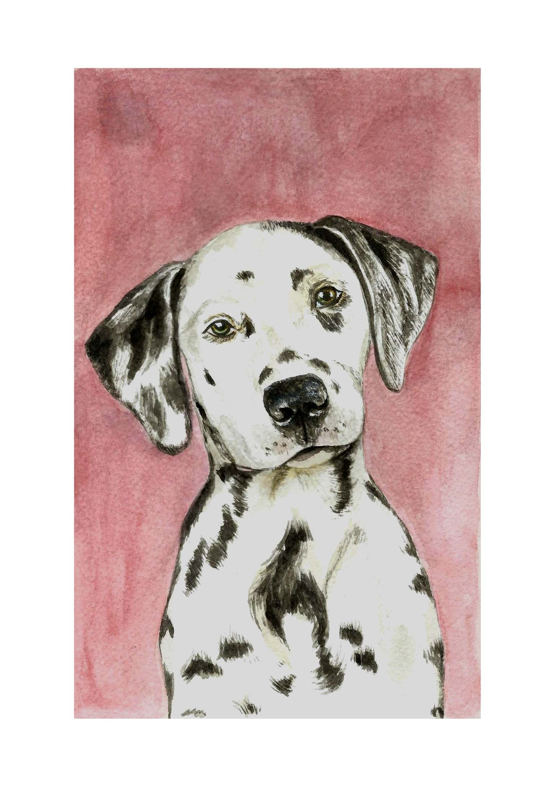
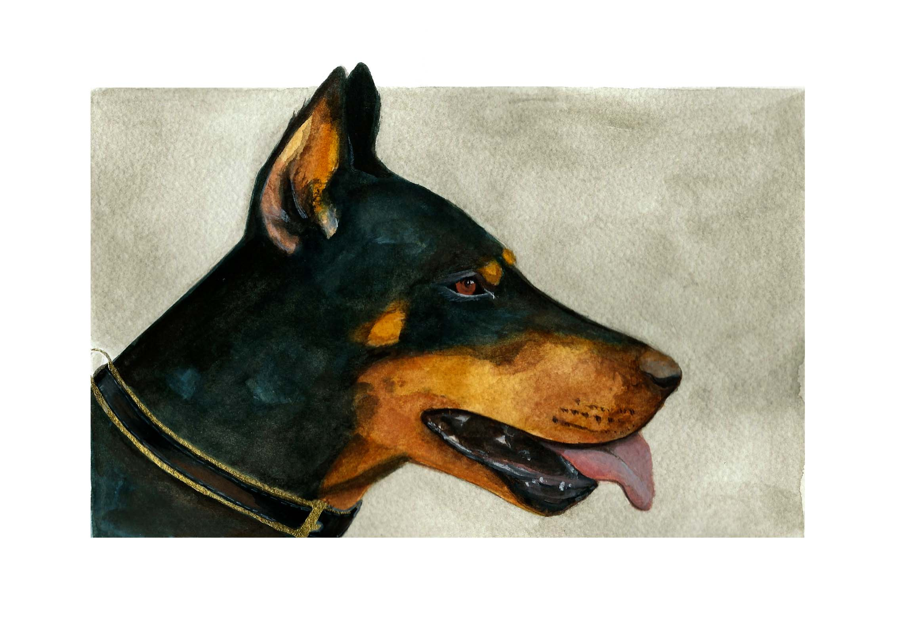
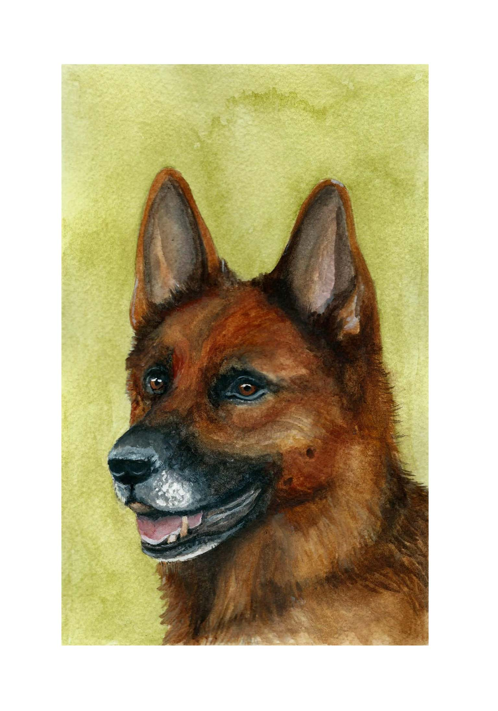

Gallery
All of our watercolour PAWtraits are hand painted to capture your pet's unique personality. Check our our featured PAWtraits and the latest from our Instagram feed.
Featured PAWtraits



For our latest PAWtraits, follow us on Instagram.